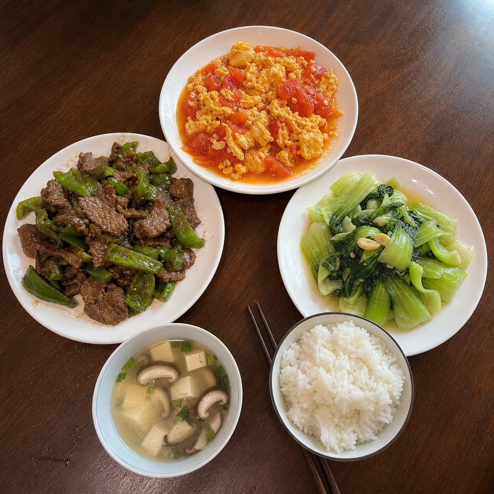
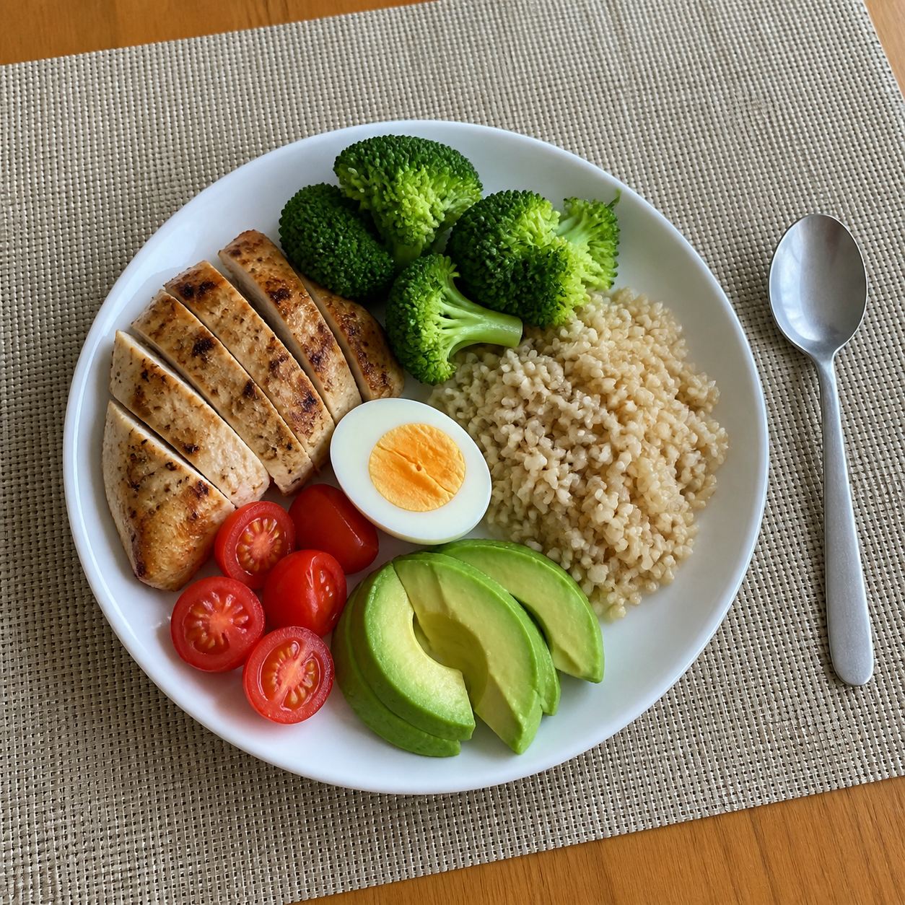
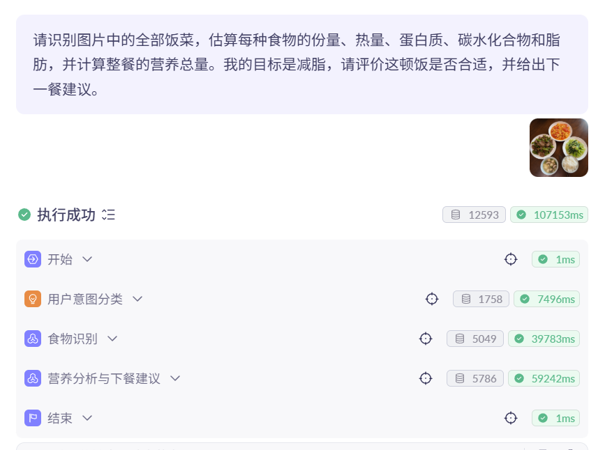
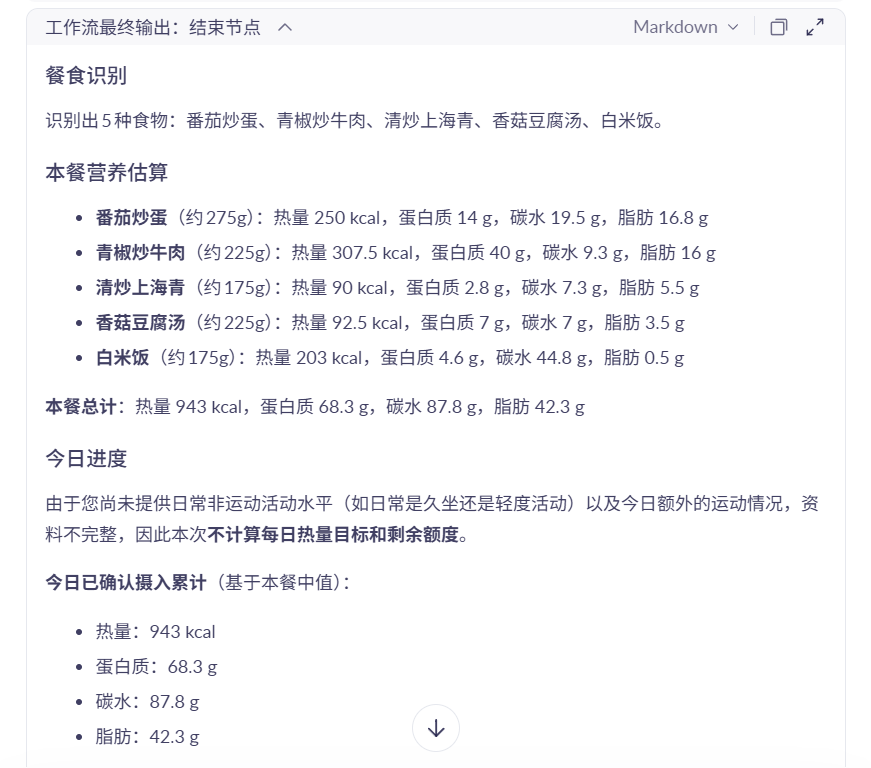
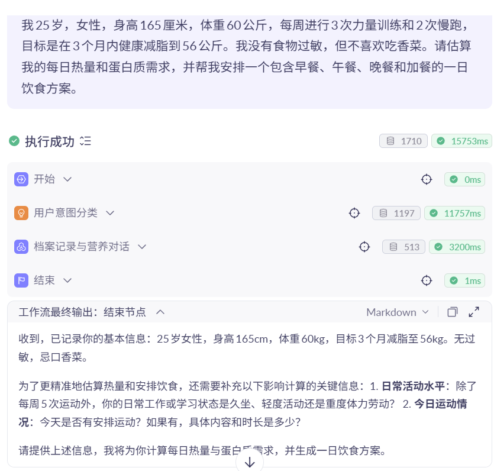
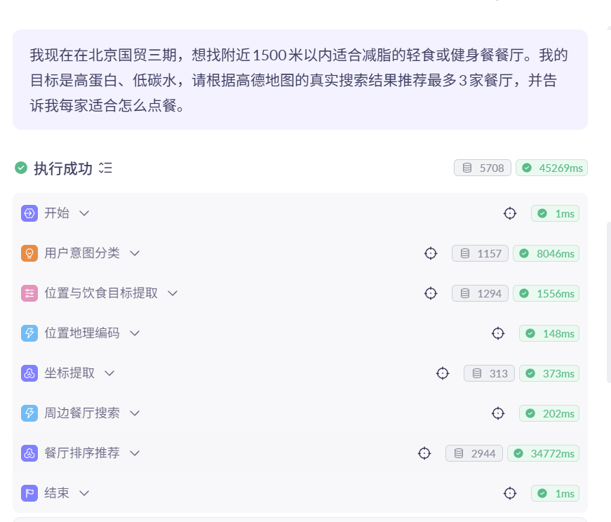
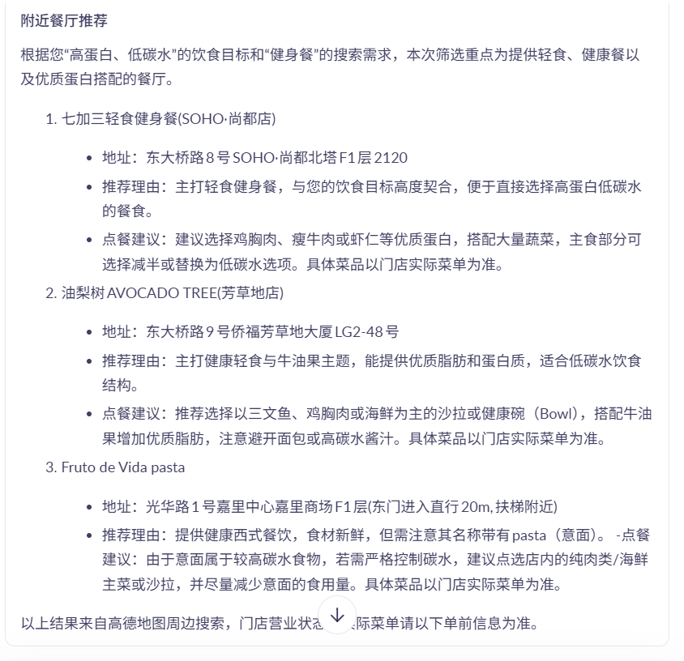
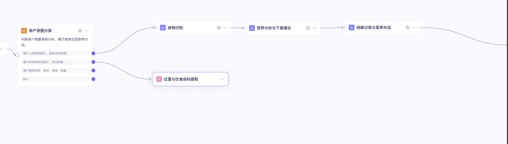

体重管理年
2024—2026
国家卫生健康委等 16 部门启动“体重管理年”活动，推动健康生活方式成为日常。
启动普及支持环境
饮食建议的难点不在知识本身，而在于它必须发生在用户真正要做选择的那一刻。
体重管理年
国家卫生健康委等 16 部门启动“体重管理年”活动，推动健康生活方式成为日常。
生成式 AI
截至 2025 年 6 月，我国生成式人工智能用户规模。
真正的机会
当 AI 能理解照片、目标和位置，它才能把建议放进生活，而不只是放在聊天框里。
“这顿饭热量多少？”
图片识别 + 营养估算“今天还该怎么吃？”
个人档案 + 下一餐建议“附近有什么能吃？”
真实地图 + 点餐建议不是把功能堆在一起，而是根据用户意图，在正确的时机走正确的路径。

识别食物组成、估算份量，并把热量、蛋白质、碳水和脂肪表达为合理区间。
理解身高、体重、运动、目标、过敏和饮食偏好，把宏观目标拆成下一餐可执行的建议。
从用户位置和饮食目标中提取搜索参数，调用高德地图 MCP 返回真实餐厅，再给通用、可执行的点餐建议。
点击不同场景，查看这个智能体会如何理解用户的输入。

以下截图来自百炼工作流的实际测试过程：每一条路径均经过意图分类、节点执行和最终结果输出。

食物识别、营养分析与下一餐建议节点均成功执行。

输出食物清单、份量、热量和三大营养素，保持区间与边界说明。

读取年龄、身高、体重、目标与偏好，并针对缺失信息继续追问。

从用户原话提取位置与目标，串联地理编码、坐标提取和周边搜索。

测试中返回轻食健身餐、AVOCADO TREE 等餐厅；输出同时给出点餐建议与饮食提醒。
百炼工作流让每一步都可见、可调试、可解释；这对健康建议尤其重要。

先识别用户是要分析食物、寻找餐厅，还是补充个人信息。
Qwen3-VL-Flash 接收图片，完成食物识别与营养线索提取。
Amap Maps MCP 完成地理编码、周边搜索与结果传递。
字段缺失不猜；isError=true 时停止排序与餐厅推荐。
主动标注不确定性，邀请用户补拍或补充份量。
使用营养区间，不把视觉推测伪装成实验室数据。
工具报错与搜索为空分开处理；报错时不编造餐厅。
不做疾病诊断；特殊情况建议咨询医生或持证营养师。
网页按 PPT 的叙事顺序展开。每一格都可作为你演讲时停留、讲解和过渡的独立“页面”。
AI 私人营养师：让每一次吃饭更接近健康。
我们每天都在吃，但很少知道怎样吃更适合自己。
为什么做、做了什么、如何实现、未来去哪里。
体重管理与生成式 AI 共同推动健康服务走向日常。
健康知识很多，真正的选择却发生在拍照和点餐的瞬间。
减脂、增肌、想吃得更明白的人，都需要即时建议。
一个看懂一餐、理解一个人、连接一座城市的 Agent。
食物识别、营养对话、真实餐厅推荐。
通过 Qwen VL 理解饭菜图片，输出营养合理区间。
提取用户档案与偏好，把目标化成下一餐行动。
借助高德 MCP 找到真实存在的附近健康餐厅。
意图分类负责分流，节点编排保证每条路径可调试。
一句自然语言，自动判断走图片、档案还是地图分支。
图片作为本轮输入，识别食材、烹饪方式和份量线索。
坚持区间表达与不确定性提示，不制造“伪精确”。
从用户原话中提取位置、饮食目标、关键词与搜索半径。
地理编码、坐标提取、周边搜索由 MCP 串联完成。
饮食契合度优先，其次才是距离、评分和价格。
地图额度不足时如实说明；搜索为空时才建议调整条件。
用中式套餐、轻食和快餐验证识别与营养输出。
用身高、体重、目标、运动和偏好形成可持续档案。
只有真实返回数据才推荐餐厅，缺失字段明确写“未提供”。
百炼发布 Agent；网页部署 OSS；钉钉机器人连接真实对话。
让 AI 不替人做决定，而是让每一次选择更接近健康。
不做疾病诊断；明确“营养估算”是辅助判断，不是医疗结论。
通过意图分类把复杂对话拆成三条清晰、可验证的服务链路。
把高德地图 MCP 加入流程，让“附近吃什么”可以基于真实数据回答。
把图片残留、上传就绪、额度不足、工具错误逐一变成可解释的规则。
现场可先讲“为什么做”，再点击互动演示；若网络不稳定，直接切换到 PPT 或本地网页，内容完全一致。
真正的成长不是再加一个功能，而是逐步提升对人的理解、对数据的尊重和对行为的陪伴。
解决图片上传就绪、会话重置、异常提示与测试闭环。
把体征、目标、过敏、运动和偏好沉淀为可控档案。
接入穿戴设备、食堂外卖、路线导航和长期趋势追踪。